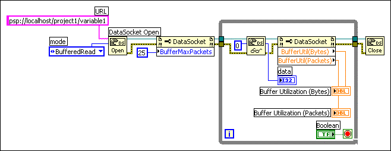

If you use network-published shared variables or a psp or dstp URL to share data programmatically, LabVIEW by default writes only the most recent value to all readers. When one client writes values to the server faster than another client reads them, newer values overwrite older, unprocessed values before the clients read them. If the reader does not receive a value before receiving the following value, the data is lost. This loss of unprocessed data can occur at the server or at the client. This loss of data might not be a problem if you are reading data and you want to receive only the most recent value written to the server. However, if you want to receive every value written to the server or if lossy transfers are unacceptable, you must buffer the data on the client. Place a checkmark in the Use Buffering checkbox on the Network page of the Shared Variable Properties dialog box to enable buffering for the shared variable.
Buffering allows you to lessen the potential timing difference between the reader and writer but does not guarantee data delivery. If the data in a buffer at the server or client exceeds the buffer size, the buffer discards older values in place of newer values. You can set the size of a buffer for a shared variable on the Network page of the Shared Variable Properties dialog box to set how many data packets the shared variable retains before overwriting old data.
You also can specify programmatically the maximum number of bytes and the maximum number of values, in terms of packets, that the buffer for each item can hold. National Instruments recommends that you specify both the Buffer Maximum Bytes and Buffer Maximum Packets properties when you buffer data. If incoming data exceeds the maximum number of bytes or the maximum number of values, LabVIEW removes older data from the buffer to accommodate the new data.
When configuring buffering programmatically, wire the written data to the Set Variant Attribute function to detect discarded values in a data stream by uniquely identifying each value in the writer and checking for discarded sequence IDs in the reader.
If you publish a shared variable with less than 8 kilobytes of data, it can take up to 10 milliseconds for LabVIEW to send that data over the network. The Flush Shared Variable Data VI allows you to flush the buffer immediately and eliminate this delay.
If you want the buffer-enabled client to receive all data, use the DataSocket Write function to write live data programmatically. Writing data from the front panel can result in data loss.
|
Note��Client-side buffering also applies to other protocols, such as opc and file. However, in some cases these servers might lose data. |
Set the mode input of the DataSocket Open function to BufferedRead or BufferedReadWrite and use a Property Node to set the DataSocket properties for the size of a first-in-first-out (FIFO) buffer. Doing so ensures that LabVIEW stores the values the client receives in a buffer rather than overwriting them every time the value changes.
|
Note��If you use DataSocket properties to set the size of a FIFO buffer, you must set the mode input of the DataSocket Open function to BufferedRead or BufferedReadWrite. Otherwise, the item at the server is not buffered for the connection. |
The following block diagram uses buffering programmatically.

You also can enable buffering when sharing data using the DataSocket functions by adding the string ?maxbytes=1000&maxpackets=10, to the end of the URL, where 1000 is the maximum number of bytes the buffer contains and 10 is the maximum number of packets the buffer contains.
|
Note��Buffering applies when you use the DataSocket Read function to read data a server writes. Buffering is not available when you use front panel DataSocket data binding to read data. Buffering is available for front panel data binding through the Shared Variable Engine if you bind controls to shared variables with buffering enabled on the Network page of the Shared Variable Properties dialog box. |
Use the Buffer Utilization (Bytes) property or the Buffer Utilization (Packets) property to request diagnostic information about the buffers you specify. Use these properties to check the percentage of buffer in use on the client to determine whether the current buffer size is sufficient. If the value of either of these properties approaches the maximum value of the buffer, increase the buffer size to make sure you receive all values the server writes. You also can increase the rate at which the While Loop containing the DataSocket functions executes to increase the read rate.
When you configure client-side buffering, servers might lose data in some cases if the server sends data faster than the network can accept. You can use server-side buffering for NI Publish-Subscribe Protocol (NI-PSP) or dstp buffering. To use NI-PSP buffering, you must connect to an existing shared variable with buffering enabled. To use dstp buffering, you also must use the DataSocket Server Manager to configure server-side buffering. Refer to the DataSocket Server Help for more information about server-side buffering for the DataSocket Server. For other protocols, refer to the server documentation for more information about server-side buffering for that server.